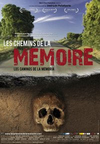

¿Sabíais que la genial actriz Audrey Hepburn nació en Bruselas? Yo tampoco tenía ni idea hasta que un día, después de una buena cena en el Brassens (dirección más que recomendable), me topé con esta placa:

Bruselas nunca deja de sorprenderme.

El blog-guía escrito por españoles en Bruselas para los hispanoparlantes que viven aquí y para los turistas que aprovechan los vuelos baratos para descubrir el chocolate, la cerveza, la Grand Place y tantas otras cosas buenas.
¿Sabíais que la genial actriz Audrey Hepburn nació en Bruselas? Yo tampoco tenía ni idea hasta que un día, después de una buena cena en el Brassens (dirección más que recomendable), me topé con esta placa:
Bruselas nunca deja de sorprenderme.

El centro de arte independiente Atelier 340 Muzeum organiza este año un cine de verano en su nuevo jardín hasta el día 11 de septiembre. La iniciativa la han llamado Filmotek-Les pieds dans l’herbe, y esperan retomarla cada año.
La proyecciones tienen lugar los viernes y los sábados a las diez de la noche, y la entrada es libre y gratuita. Fiel a su vocación, además de un cine más clásico, el Atelier 340 Muzeum ha programado cortometrajes de artistas, videos de performance y películas de sus archivos.
Las películas se ven sentado a una mesa, disfrutando de los refrigerios propuestos en la cafetería del centro, que está abierta para la ocasión.
¿Qué tienen que ver el programa Erasmus, Elías Querejeta y Villa (¡maravilla!)?Pues en Objetivo Bruselas nos metemos en jardines y te hablaremos de todo esto y de más en 60 minutos de programa en la 101.9 de Radio Alma.
Hoy martes de 19 a 20, comentaremos el Festival Internacional de Cine Documental Millenium, en el que Elías Querejeta estuvo presente y al que entrevistamos. Diremos los ganadores y contaremos con otra entrevista a Rosa Elcarte, Directora de Cooperación Sectorial y Multilateral.

Y por supuesto en estos días…FÚTBOL. Los análisis del partido España-Honduras de ayer de la mano de nuestros comentaristas de lujo: Héctor Payo, Alejandro Andrés Gallego y Miguel Martínez. Todo lo que les emocionó y lo que no tanto, sin echar balones fuera.
Y no podía faltar el patrón de todas las becas de movilidad europea, Erasmus. Uno de los integrantes de la Erasmus Student Network de Bruselas, Bjorn Lemmens, nos contará cómo acogen a los erasmus y cómo se viven estas últimas semanas de exámenes, despedidas y últimos momentos festivos.
Cine, fútbol, Erasmus… muchas emociones, en sólo una hora, ¡os esperamos!
Ayer lunes tuvo lugar la presentación del documental “Los caminos de la memoria”

Fue en BOZAR y contó con el patrocinio de la Embajada de España y numerosos partners.
Se trata de un documental que cuenta ya con un importante recorrido. Ha obtenido varios premios, entre ellos el segundo premio en la sección documentales de la pasada Seminci.
Como puede uno imaginarse, indaga en la recuperación de la memoria de la Guerra Civil española y de la dictadura que siguió.
En el estreno estuvo presente el director José Luís Peñafuerte y los productores, belga y español. Que hicieron una breve y agradable introducción.
Al final hubo largos aplausos de una sala completamente abarrotada y una entrevista muy interesante en un improvisado “plató” en el escenario.
En el documental intervienen, entre otros, Jorge Semprun, María Casares, Marcos Ana, varios exiliados que no son famosos… Y además, el profesor y los alumnos de una escuela de Madrid que protagonizan una de las partes más interesantes de la obra y que posaron en una foto para este blog al final de la representación.

Aunque las fechas bailan, como de costumbre, la película se estrenará en las salas belgas dentro de poco más de un mes. ¡Sinceramente os recomiendo que vayáis a verla!
Este domingo en el UGC de Brouckere hay un maratón con las tres películas de Millenium, basadas en la trilogía homónima de Stieg Larsson.
No sé que tal serán las películas, pero los libros me engancharon e hicieron sufrir un montón, mucho más de lo que me podía esperar.
En La première sortean entradas. Yo por si acaso me he apuntado, a ver si hay suerte.